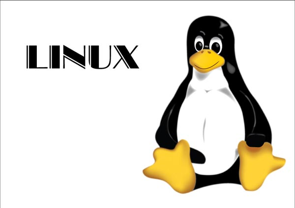

Ja sam Tin Sučević, trenutno pohađam Prvu srednju informatičku školu s pravom javnosti, a završio sam osnovnu školu Špansko-Oranice. Rođen sam 18. svibnja 2000. godine u Zagrebu. Informatika me počela zanimati u 3. razredu osnovne škole i od onda se svakodnevno trudim barem nešto malo naučiti.
Stranica je napravljena u Atom text editoru na Ubuntu operativnom sistemu.
